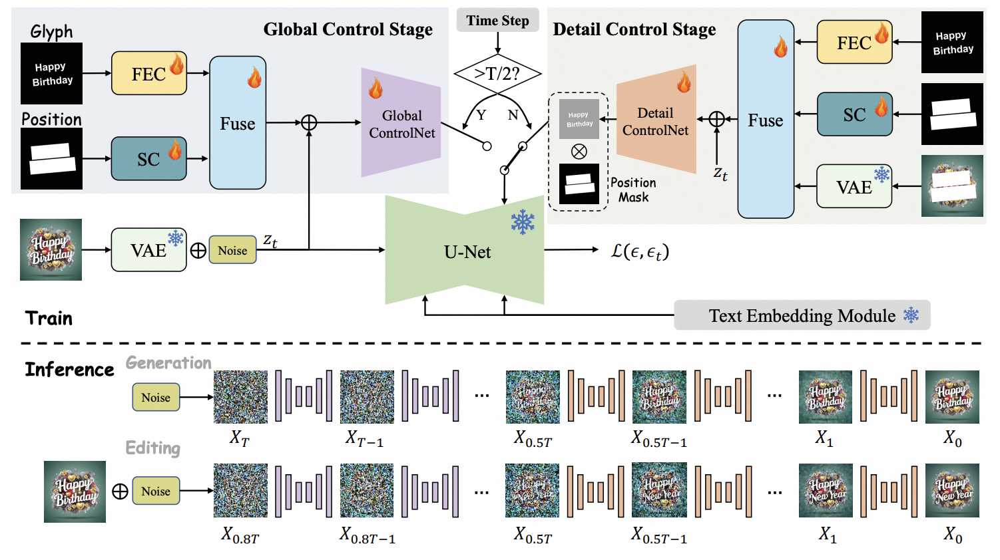

Boqiang Zhang 张博强Master StudentUniversity of Science and Technology of China Email: cyril@mail.ustc.edu.cn
|
|
About me
I am currently a second-year (2022-now) Master student in University of Science and Technology of China (USTC), advised by Prof. Hongtao Xie. I received bachelor's degree in Northwestern Polytechnical University (NWPU).
I am now a research intern in DAMO Alibaba. Supervised by Xin Li and Lidong Bing.
My recent research interests are multimodal large language models, Unified Understanding and Generation. Before, I mainly focus on the field of scene text recognition and editing, including self-supervised and semi-supervised approaches.
Publications&Preprints

How Control Information Influences Multilingual Text Image Generation and Editing?
Arxiv, 2024

Choose What You Need: Disentangled Representation Learning for Scene Text Recognition Removal and Editing
CVPR, 2024
[paper]

Linguistic more: Taking a further step toward efficient and accurate scene text recognition
IJCAI, 2023
Symmetrical linguistic feature distillation with clip for scene text recognition
ACM MM, 2023
Self-Supervised Pre-training with Symmetric Superimposition Modeling for Scene Text Recognition
IJCAI, 2024
Focus on the Whole Character: Discriminative Character Modeling for Scene Text Recognition
IJCAI, 2024
Services
- Conference Reviewer: NeurlIPS 2024, ACM MM 2024, ICLR 2025
Honors
- HuaWei Scholarship, 2023
- Outstanding Graduate of NWPU, 2022 (top 5%)
- National Scholarship, 2021, 2020, 2019
- Outstanding Student of NWPU, 2020 (top 1%)
| © Boqiang Zhang | Last update: Aug 2024 |